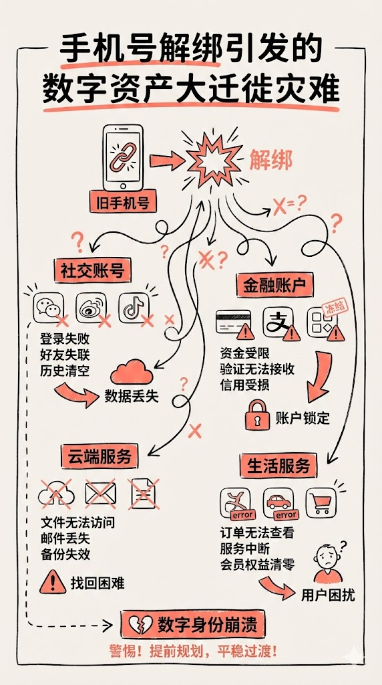
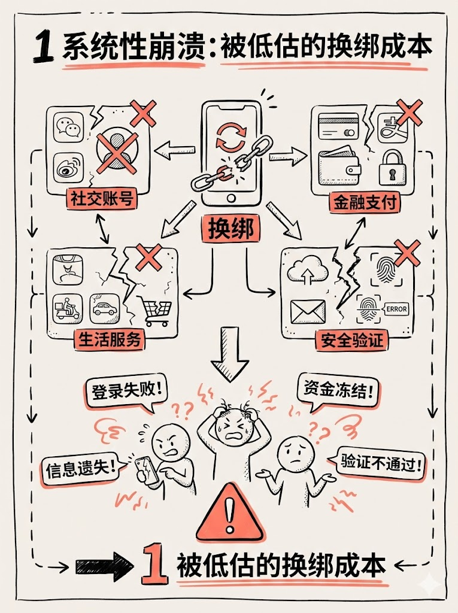
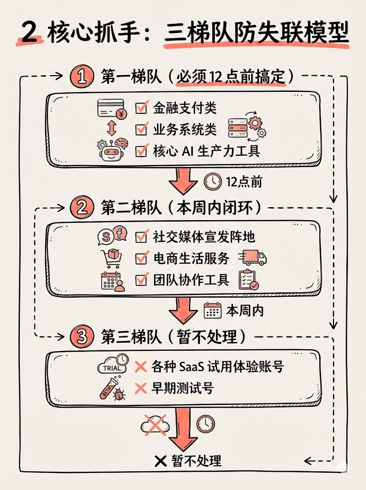
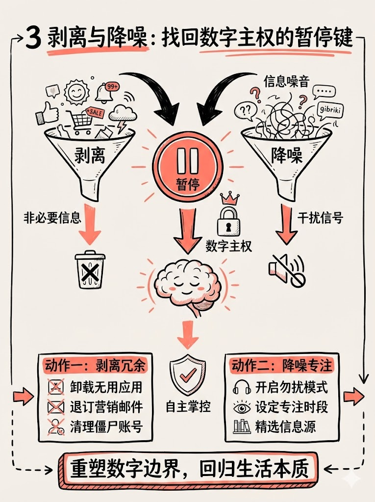
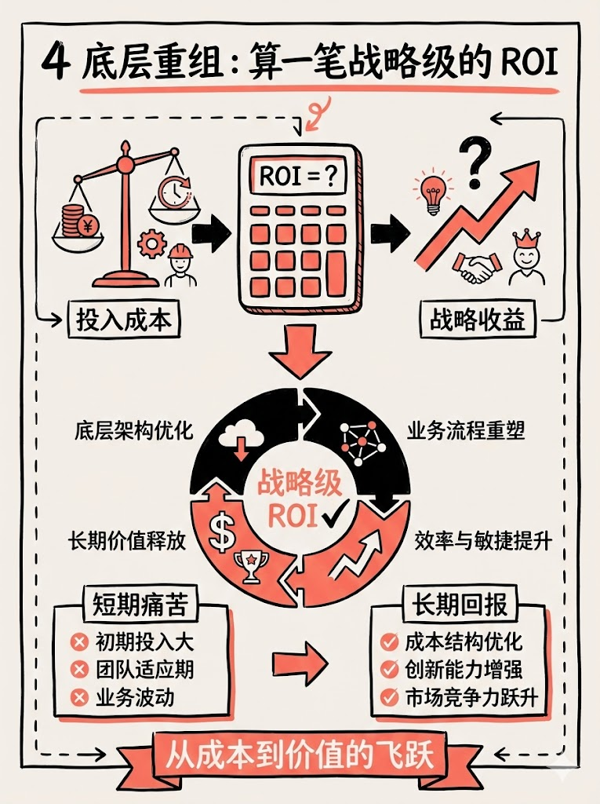

很多人一听到让 AI 去翻自己写过的历史代码，第一反应是这就像在抽盲盒，随时可能翻车。但真正决定你人效的，从来不是用多贵的算力，而是你能否打通系统底层的执行逻辑。
作为一个在互联网摸爬滚打了 10 多年的老 PM，我只看最终落袋的投产比。这几天我受够了我的两个 AI 助手——管家大龙（Openclaw）和特种兵 Antigravity——存在着严重的“数据孤岛”问题。这种跨部门不通气导致的人效损耗，在过去的大厂架构里我见得太多了。
1. 记忆互通：重构底层操作系统

最开始大龙负责记录每日运营日志，而负责去前线打仗的特种兵完全拿不到前期的策略大纲。我让特种兵写了一套极简的 Python 脚本作为抓手，强行把每天的联合日志同步写进了大龙的记忆体里。现在，他们终于能在一个会议室里看同一份数据报表了。
2. 资产复用：找回失落的开发者凭证

为了实现微信公众号的自动发布闭环，我们需要 AppSecret。但我完全想不起来放哪了。结果，特种兵直接全局遍历了我以前的本地测试工程代码，硬生生从一个废弃许久的脚本里，帮我把当时写死的密钥挖了出来。
3. 交付闭环：官方紫边排版引擎回归

文章写完后，我们抛弃了花里胡哨且水土不服的外部组装件。我们选择直接注入 Openclaw 官方出厂配置的原生紫边排版引擎 md2wechat.py。从优雅的引用块设计，到专属深紫色高亮强调色，全自动无缝生成极具克制感的推送草稿。
这并不是在追求多炫酷的技术，而是为了建立一条防御线。把繁琐的平台复制粘贴和排版操作交给机器，避免自己在无意义的体力劳动中被内耗。真正的效率，永远保留一个对自己时间“降噪”的选项。
